Тема №3. Устройство и эксплуатация систем передачи с частотным разделением каналов.
Занятие №18. Комплекс аппаратуры тонального телеграфирования П-318М и П-327.
Учебные вопросы:
- Понятия и определения телеграфии, принцип тонального телеграфирования.
- Назначение, состав, технические характеристики, режимы работы комплекса аппаратуры тонального телеграфирования П-318М.
- Назначение, состав, технические характеристики и режимы работы комплекса аппаратуры тонального телеграфирования П-327.
Литература:
1. Понятия и определения телеграфии, принцип тонального телеграфирования.
Телеграфией называется область электросвязи, занимающаяся передачей дискретных сообщений. Дискретные сообщения представляют собой последовательности символов (буквы, цифры, знаки и т.п.). Совокупность применяемых символов называют алфавитом сообщений. Для передачи символов по каналам связи используют дискретные электрические сигналы. Дискретным называется сигнал в котором регистрируется конечное число значений его параметров, например, напряжений. Каждому символу ставится в соответствие определенная комбинация сигналов. Систему соответствий между символами алфавита сообщений и дискретными сигналами называют кодом. Совокупность дискретных сигналов, соответствующих определенному символу, называется кодовой комбинацией. Символы алфавита могут быть пронумерованы натуральным рядом чисел, например, а =1, б = 2, в = 3.... Каждое число удобно представить в двоичной форме, т.е. а - 001,
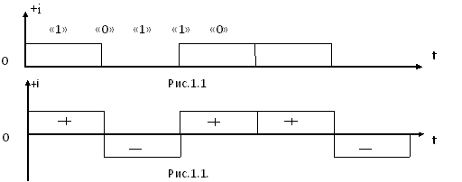б - 010, в - 011,... . Удобство представления чисел в двоичной форме состоит в том, что логическим "1" и "0" легко поставить в соответствие простые электрические сигналы. Из рис.1.1 видно, что "1" может быть поставлена в соответствие токовая (положительная) посылка", а "0" - бестоковая или отрицательная посылка.
Под посылкой понимается элементарный сигнал длительностью t. Сигналы, состоящие из однополярных, рис.1.1, илидвухполярных,рис.1.2, посылок называются сигналами постоянного тока. Минимально необходимое число посылок в кодовой комбинации - n - определяется объемом алфавита - (количеством символов) - N . и находится с помощью выражения:
n = log2N
Например, для передачи 32 букв алфавита число n будет равно:
n = log2 32= 5.
В современных телеграфных аппаратах, состоящих на вооружении войск связи, применен код, использующий однополярную последовательность посылок постоянного тока с числом импульсов в кодовой комбинации =5. Так, например, букве "Р" русского алфавита соответствует кодовая комбинация вида 01010, букве "Я" - 11101 и т.д.
В дискретных каналах под скоростью передачи двоичной информации подразумевается количество двоичных импульсов, передаваемых за 1 сек. Различают скорость передачи информации R (информационную скорость) и скорость телеграфирования В.
В реальных условиях как правило, в состав кодовой комбинации, кроме информационных посылок, т.е. тех, с помощью которых непосредственно кодируются символы, входят также служебные посылки, необходимые для обеспечения работы оконечных телеграфных устройств (ОТУ). Так, в старт-стопных телеграфных аппаратах это стартовая - бестоковая и стоповая - токовая посылки. Таким образом, в целом кодовая комбинация содержит семь двоичных импульсов, см. рис.1.2, из которых пять - информационных и два служебных.
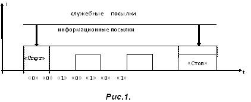За единицу информации принята одна двоичная посылка ("0"или"1"),называемая бит.
Скоростью телеграфирования (В) называется количество единичных элементов (информационных и служебных посылок) передаваемых за 1 сек. За единицу измерения величины В принят 1 бод, предполагающий передачу 1 двоичного импульса за 1 сек.
Информационной скоростью (R) называется количество информационных посылок, передаваемых за 1 сек. За единицу измерения величины R принят 1 бит/с. Следовательно, если одна семиэлементная кодовая комбинация с выхода телеграфного аппарата, передается за 1 сек, то В = 7 бод, а R= 5 бит/с, если за 1 сек. передается, например, десять кодовых комбинаций, скорости передачи составляют соответственно 70 бод и 50 бит/с.
Скорость передачи однозначно связана с частотой следования двоичных импульсов - F . Как известно, если период одного полного синусоидального колебания -Т составляет1 сек. частота его F = 1Гц. На этом же периоде, см. рис 1.3, могут быть уложены два двоичных импульса (положительной и отрицательной полярностей) с длительностями, равными Т/2.
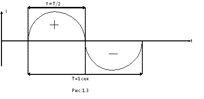Поэтому принято считать, что 1Гц = 1 бод (бит/с) или в общем виде F=1/2 В.
Передача дискретных сигналов по каналам ТЧ.
Как уже отмечалось, информация всех видов, в том числе и телеграфная, передается по каналам ТЧ. Рассмотрим, можно ли посылки постоянного тока, поступающие непосредственно с выхода телеграфного аппарата (rt = 50 бод) передать по каналу ТЧ. Очевидно, при данной скорости передачи частота следования посылок составляет F = 25 Гц. Спектр последовательности импульсов кодовой комбинации представленной на рис. 1.3 имеет вид, рис.1.4.
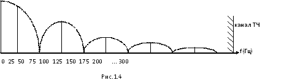Как видно из рис.1.4, основная часть энергии телеграфного сигнала (первых пять гармоник частоты F=25 Гц) сосредоточена до нижней границы полосы частот канала ТЧ и по каналу ТЧ передана быть не может. В связи с этим, для обеспечения передачи дискретных сигналов по каналу ТЧ необходимо преобразовать посылки постоянного тока в тональные с частотами лежащими в полосе (0,3 - 3,4) кГц.
Принцип тонального телеграфирования.
Принято считать, что если для передачи телеграфных сигналов применяются переменные токи с частотами, находящимися в спектре 0,3-3,4 кГц, то такой способ телеграфирования называют тональным телеграфированием. Использование канала ТЧ для передачи телеграфной или фототелеграфной информации называют вторичным уплотнением. Аппаратура, предназначенная для преобразования посылок постоянного тока от ОТУ в тональные, называется аппаратурой тонального телеграфирования и является одним из видов аппаратуры вторичного уплотнения.
Принцип работы аппаратуры тонального телеграфирования показан на рис. 1.5, а упрощенные графики сигналов, получаемых на передающем и приемном концах—на рис. 1.6 . На схеме (рис. 1.5) на передающем конце включены два генератора, характеристические частоты которых разнятся на определенную величину, а на приемном конце используются устройства, обеспечивающие выделение и детектирование частот перед подачей их в обмотки приемного реле. В качестве канала связи используется канал ТЧ.
Проследим передачу телеграфных сигналов для однополюсной работы. Посылки постоянного тока с выхода передающего телеграфного аппарата проходят через обмотку 1-2 реле передачи станции А. Через обмотку 3-4 этого же реле постоянно проходит ток от местной батареи МБ, обеспечивая удерживание якоря реле у левого контакта при отсутствии токовой посылки в первой обмотке. При прохождении по первой обмотке токовой посылки якорь перебросится к правому контакту (ампервитки первой обмотки выбираются в несколько раз больше ампервитков – второй обмотки). В зависимости от положения якоря на вход телефонного канала будут подаваться сигналы с частотами F1 или F2 (частоты F1 и F2 лежат внутри полосы 0,3-3,4кГц). Таким образом посылкам постоянного тока на выходе передающего телеграфного аппарата будут соответствовать тональные посылки на входе канала ТЧ (рис. 1.6). На приемном конце (станция Б) тональные посылки с выхода канала ТЧ подаются на ограничитель, который обеспечивает постоянство величины тока через обмотки приемного реле при значительных колебаниях уровня принимаемого сигнала. С выхода ограничителя тональные посылки подаются на фильтры Ф1 и Ф2, каждый из которых пропускает одну из рабочих частот. Сигналы с частотами F1 и F2 после выпрямления детекторами Д1 и Д2 подаются в обмотки приемного реле. Через обмотку 1- 2 приемного реле будет проходить выпрямленный ток от сигнала с частотой F1, а через обмотки 3-4—выпрямленный ток от сигнала с частотой F2. Если ампервитки обмоток выбраны одинаковыми, то якорь реле будет перебрасываться соответственно к правому и к левому контакту. При положении якоря у правого контакта на приемный телеграфный аппарат будет подаваться токовая посылка от линейной батареи ЛБ, при положении якоря у левого контакта — бестоковая посылка. Как видно из графиков рис. 1.6, токовой посылке на передаче соответствует токовая посылка на приеме. При практическом выполнении аппаратуры тонального телеграфирования два генератора на передающем конце заменяют одним генератором с изменяющейся частотой, а вместо двух фильтров на приемной стороне используют частотный детектор. Под влиянием посылок постоянного тока частота генератора на передающем конце изменяется от среднего значения Fср к двум крайним рабочим значениям частот Fcp.±Df. Величину изменения частоты Df называют девиацией частоты. Процесс изменения частоты генератора в соответствии с передаваемыми посылками постоянного тока - называют частотной манипуляцией.
АТТ бывает одноканальной и многоканальной. Одноканальная аппаратура занимает только незначительную часть тонального спектра, поэтому при включении её в канал ТЧ телефонная связь по этому каналу сохраняется, хотя качество её из-за изменения спектра несколько ухудшается.
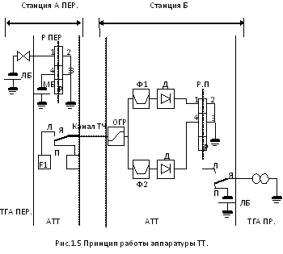К примеру для АТТ П-317, где Fср=3150 Гц ?f=55 Гц, полоса частот занимаемая телеграфным каналом составляет от 3050 до 3250 Гц. Оставшаяся часть канала ТЧ используется для телефонной связи Рис. 1.7.
Очевидно, использование канала ТЧ для получения одной телеграфной связи не рационально поэтому при разработке аппаратуры ТТ возникает задача правильного размещения максимального числа ТЛГ каналов в эффективно передаваемой полосе ТЛФ канала. Наиболее простое решение этой задачи состоит в определении ширины полосы частот телеграфного канала с последующим делением полосы пропускания ТЛФ канала на участки, равные:
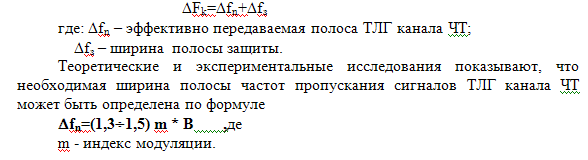 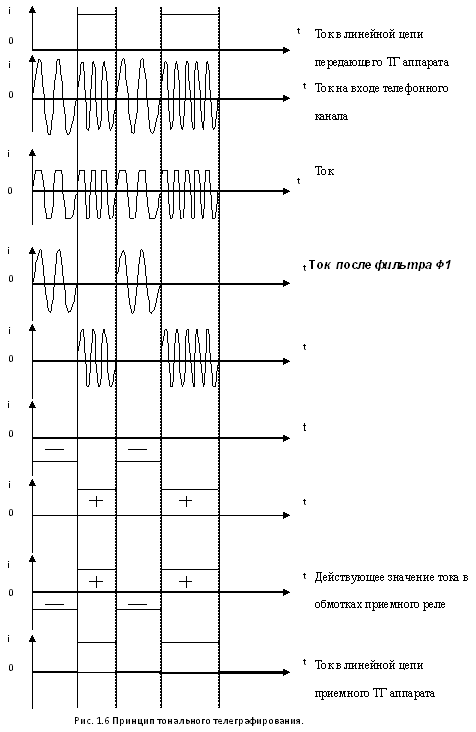Выбор величины индекса модуляции имеет очень важное значение с точки зрения спектра получения необходимых энергетических соотношений. В аппаратуре ТТ обычно выбирают индекс модуляции в пределах 1<m£2.
Ширина полосы защиты Dfз ограничивается возможностями приемных полосовых фильтров каналов,которые должны обеспечить защищенностьпососеднему каналу порядка 4-5 Нп. В этом случае величина краевых искаженийот воздействия помех не превышает 2-3%. При таком требовании наиболее целесообразно с точки зрения экономичности изготовления фильтров выбирать Df3 не менее 40Гц. Такимобразом при скорости телеграфирования (передачи) В=50 Бод и m=1,8. Dfn=135 Гц. С запасом берем Dfn» 140 Гц, тогда
DFn=(140 +40)=180 Гц.
Это означает, что в полосе частот стандартного канала тональной частоты (0,3?3,4) кГц. DF=3100 Гц, можно разместить не более N=3100/180=17 телеграфных каналов.
В военной телеграфной связи находит применение аппаратура ТТ:
- одноканальная – П-314М(П-317)
- многоканальная – П-318 (до 16 каналов)
- П-327 (до 12 каналов)
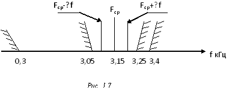Совокупность АТТ и системы передачи при подключении к которым оконечных телеграфных устройств (ТГА, спецаппаратуры) обеспечивается обмен посылками постоянного тока называется каналом тонального телеграфирования.
Структура канала тонального телеграфирования.
Общая схема КТТ представлена на рис. 1.8.
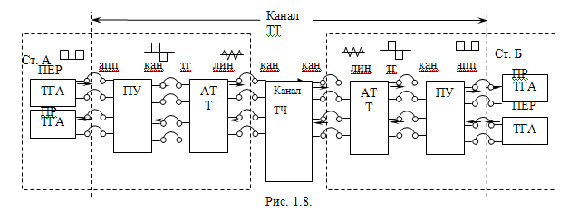В образовании КТТ участвует оборудование КТЧ, АТТ и переходные устройства станций А и Б.
Для АТТ различают две стороны:
- линейную (ЛИН), которой АТТ подключается к КТЧ;
-телеграфную (ТГ), на которой находятся входы и выходы каналов ТТ.
На входы АТТ всегда должны подаваться двухполюсные посылки постоянного тока, (за исключением АТТ старого парка типа П-314,П-317 в которых предусмотрена работа однополярными посылками) соответственно на ТГ выходах АТТ формируются также двухполярные импульсы. Как уже отмечалось, современные войсковые ТГА работают однополярными посылками постоянного тока. Для преобразования однополярных посылок, поступающих с выхода ТГА, в двухполярные, необходимые для нормальной работы АТТ, в тракте передачи и обратного преобразования в тракте приема используют специальное устройство, которое называется переходное устройство (ПУ). На ПУ также различают две стороны:
-канальную (КАН), со стороны которой входы ПУ соединяются с АТТ;
-аппаратную (АПП), со стороны которой подключаются телеграфные аппараты.
Рассмотрим, какие преобразования претерпевает сигнал, проходя от передающего ТГА к приемному, см. рис. 1.8.
Однополярные посылки постоянного тока с выхода ТГА поступают на АПП - вход ПУ, в котором они преобразуются в двухполярные импульсы. Эти импульсы подаются на ТГ - вход АТТ и преобразуются в тональные посылки. Частотно-манипулированный сигнал передается по КТЧ и на ст. Б с выхода КТЧ поступает на ЛИН - вход АТТ, на выходе которой формируются двухполярные посылки постоянного тока. Затем в ПУ осуществляется их преобразование в однополярные импульсы, которые и поступают в «приемник» ТГА. В обратном направлении (от ст. Б к А) преобразование сигналов аналогичное. Следует отметить, что на выходе некоторых оконечных телеграфных устройств, например, телеграфная аппаратура, формируются двухполярные посылки постоянного тока. В этом случае необходимость в переходном устройстве отпадает и сигналы от оконечного телеграфного устройства подаются (снимаются) на (с) вход (выхода) АТТ, минуя ПУ. Упрощенная схема ПУ, поясняющая принцип его действия, представлена на рис. 1.9. в зависимости от положения якоря, управление которым осуществляет ключ К ТГА, на ТГ - вход АТТ подается «+» или «-» источника питания МБ.
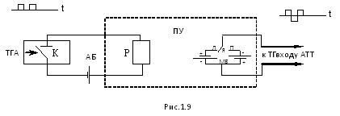Цепь постоянного тока, состоящая из ключа К телеграфного аппарата, обмотки реле Р и источника питания ЛБ, называется линейной или телеграфной.
2. Назначение, состав, тактико-технические данные, режимы работы и структурная схема аппаратуры П-318М6.
Тактико-технические характеристики.
Назначение:
Военно-полевая аппаратура тонального телеграфирования П-318М предназначена для образования 4х, 6ти,10ти, 12ти или 16ти телеграфных каналов при работе по каналам ТЧ, образованным проводными, радиорелейными, тропосферными или космическими средствами связи.
Характеристика:
Аппаратура П-318М является многоканальной системой тонального телеграфирования с частотной модуляцией несущих колебаний.
В состав комплекса аппаратуры П-318М входят:
а) аппаратура тонального телеграфирования П-318М-6;
б) аппаратура тонального телеграфирования П-318М-4;
в) переходное устройство П-318М-ПУ;
г) устройство телефонно-телеграфного переговора П-318М-УТТП.
А также комплект ЗИП, чехлы и эксплуатационная документация.
Электрические характеристики.
Средняя частота любого канала определяется, исходя из следующей зависимости: Fср=270+180 n, где Fср - средняя частота, определяемого канала,n номер канала.
Девиация частоты для всех каналов одинакова и составляет ± 50 Гц.
Во всех каналах аппаратуры передаче положительной или токовой посылке соответствует верхняя характеристическая частота (Fср + 50Гц), отрицательной или бестоковой - нижняя (Fср - 50Гц) (рис. 2.1)
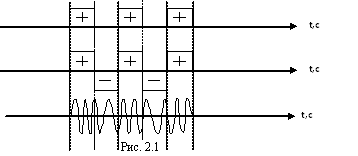Ширина полосы каждого канала 140 Гц, плюс по 20 Гц с каждой стороны на расфильтровку - итого 180 Гц (рис. 2.2).
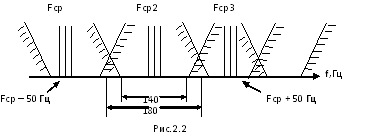Номинальная скорость телеграфирования 75 бод. Аппаратура допускает повышение скорости телеграфирования до 100 бод с небольшим увеличением краевых искажений телеграфных посылок.
Уровень сигнала на выходе тракта передачи и на входе тракта приема по каждому телеграфному каналу при работе 16-ю каналами -20 дБ (-2,3 Нп), а при работе 6,10 или 12-ю каналами– 24,3 дБ (-2,8 Нп)
Аппаратура П-318М может подключаться к каналу ТЧ в точках с уровнем - 13 дБ (-1,5 Нп) для тракта передачи и 4,34 дБ (+0.5 Нп) для тракта приема или в точках с уровнем –3.5 дБ (-0,4 Нп) для тракта приема и передачи.
Дальность связи определяется дальностью действия каналообразующей аппаратуры. При необходимости дальность связи может быть увеличена путем организации переприемов, максимальное число которых должно быть не более 3-х. Каналообразующая аппаратура, каналы которой уплотняются аппаратурой П-318М, должна работать в режиме 4 пр ТВ (4 пр ТР).
При работе П-318М-4 по физической линии аппаратура перекрывает затухание 22 дБ (2,5 Нп), что соответствует, учитывая километрическое затухание дальности, по кабелю П-274(? = 0,13 Нп/км) до 15-20 км.
Боевое применение. Система тонального телеграфирования П-318М-6 устанавливается на стационарных узлах связи, а также входит в состав комплекта аппаратных ПУС типа П-254,Р-454 ОПМ и др.
Питание аппаратуры осуществляется от сети переменного тока напряжением 127 или 220 В.
Боевые возможности.
Аппаратура П-318М-6 позволяет образовать 6 телеграфных каналов в полосе частот 380-1420Гц или 1460-2500Гц. (рис.2.3)
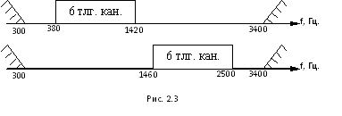Аппаратура П-318М-4 позволяет образовать 4 телеграфных канала в полосе частот 1640-2320Гц или 2540-3220Гц и рассчитана на работу как по 4-х проводному телефонному каналу, так и по двухпроводной физической цепи.
Упаковки П-318М-6 и П-318М-4 являются основными и могут работать одна независимо от другой, обеспечивая получение соответственно 6-ти или 4-х каналов.
При необходимости упаковки П-318М-4 и П-318М-6 могут работать встречно, т.е. могут быть включены на разных концах телефонного канала, обеспечивая при этом получение 4-х телеграфных каналов в полосе частот 1640-2320Гц. (рис.15)

Для получения 10,12,16 телеграфных каналов в одном телефонном канале упаковки П-318М-6 и П-318М-4 соединяются в рабочий комплект в соответствующем количестве.
Кроме того, при образовании 10,6 и 4-х телеграфных каналов, есть возможность образовать телефонную служебную связь в спектре частот
300-1300Гц. (рис.2.5).
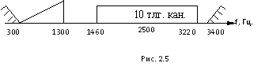Входы и выходытелеграфных каналов аппаратуры П-318М-6, П-318М-4 двухполюсные.
Переходное устройство П-318М-ПУ предназначено для согласования двухполюсных входов и выходов аппаратуры тонального телеграфирования с оконечными аппаратами, работающими током одного направления.
Один комплект П-318М-ПУ обеспечивает работу 3-х телеграфных каналов при подключении к ним телеграфных аппаратов типа СТ, обеспечивая при этом работу П-318М дуплексом(режим II) или симплексом(режим III).
Устройство телефонно-телеграфного переговора П-318М-УТТП предназначено для обеспечения служебного телеграфного переговора по телеграфным каналам аппаратуры П-318М-6 или П-318М-4 и для обеспечения служебного телефонного переговора в неиспользуемой для телеграфных связей полосе частот телефонного канала 300-1300Гц.
Устройство П-318М-УТТП рассчитано на совместную работу с аппаратурой П-318М-6 и П-318М-4. Аппаратура П-318М может выпускаться в пяти видах комплектации (табл.1).
Таблица 1.
| № п/п | Наименование комплекта | Кол-во Кан. | Состав комплекта | |||
|---|---|---|---|---|---|---|
| П-318М-6: П-318М-4: П-318М-ПУ: П-318М-УТТП | ||||||
I. |
П-318М-А |
12 |
2 |
- |
2 |
1 |
2. |
П-318М-В |
16 |
2 |
1 |
3 |
1 |
3. |
П-318М-Б |
6 |
I |
- |
1 |
1 |
4. |
П-318М-Г |
10 |
I |
1 |
2 |
1 |
5. |
П-318М-Д |
4 |
- |
1 |
1 |
1 |
6. |
Вес |
75 |
75 |
25 |
27 |
|
7. |
Потребл. Мощн. |
100 |
100 |
45 |
50 |
|
Принцип формирования линейного спектра аппаратуры П-318М.
Принцип формирования линейного спектра рассмотрим на примере образования его в 16-ти канальном комплекте П-318М т.к. он наиболее полно отражает картину всех преобразований. В основу формирования линейного спектра аппаратуры П-318М положен принцип образования стандартной (исходной) 6-ти канальной группы, занимающей спектр 1460-2500 Гц. Основная стандартная 6-ти канальная группа составлена из спектров частот 7-12 каналов, каждый из которых образуется путем модуляции несущих колебаний с частотой 1530, 1710,1890, 2070, 2250, 2430 Гц. соответственно для 7,8,9, 10,11 и 12 каналов.
Спектр частот сигналов основной группы каналов поступает на вход канала ТЧ без преобразований (Реж -Б).
Спектр частот 1-6 каналов образуется при установке аппаратуры в режим А путем модуляции несущего колебания 2880 Гц спектром основной группы и выделением нижней боковой полосы на выходе группового преобразователя. (Рис. 2.6)
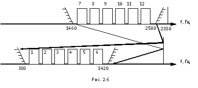Полученный спектр занимает полосу от 380 Гц. до 1420Гц. Для образования 12 каналов нужно две упаковки П-318М-6.
Спектр 13-16 каналов получается путем модуляции несущего колебания с частотой 4860Гц. спектром 4-х каналов (8,9,10,11) основной группы (1640-2320Гц) и выделением нижней боковой полосы на выходе преобразователя (рис. 2.7).
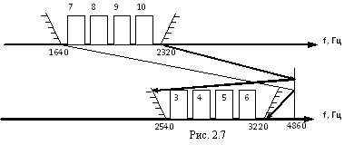Полученный спектр размещается в полосе частот 2540 Гц – 3220 Гц. Для образования 13-16 каналов необходимо иметь упаковку П-318М-4 (Реж. Б).
Таким образом полный спектр, занимаемый всеми 16-ю каналами размещается в полосе частот 380 – 3220 Гц. (Рис. 2.8).
Структурная схема включения комплектов аппаратуры П-318М для организации 16 телеграфных каналов и режимыих работ показаны на рис. 2.9.
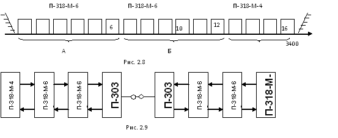Режимы работы аппаратуры П-318М.
Наличие группового оборудования позволяет включать аппаратуру
П-318М-6 в четырех режимах:
Режим А - передача и прием с преобразованием;
Режим Б - передача и прием без преобразования;
Режим - передача с преобразованием, прием без преобразования;
Режим - передача без преобразования, прием с преобразованием;
Установка режимов осуществляется 24-контактными коммутационными колодкамина блоке переключения режимов. Выбор режимов работы определяется условиями эксплуатации.
Режим – А: Обе упаковки П-318М-6 на противоположных концах телефонного канала, устанавливаются в режим А.
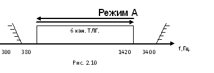Передача и прием всех 6-ти телеграфных каналов будет осуществляться в полосе частот 380-1420Гц. (рис.2.10).

Режим - Б: Обе упаковки П-318М-6на противоположных концах телефонного канала, устанавливаются в режим Б.
Передача и прием всех 6-ти телеграфных каналов будет осуществляться в полосе частот 1460-2500Гц (рис. 2.11).
Режим Б
При организации 12 каналов по одному телефонному каналу на каждой оконечной станции устанавливается комплект П-318М-А, имеющий в своем составе 2 упаковки П-318М-6, одна из упаковок работает в режиме "А", а вторая - в режиме "Б" (рис. 2.12а).
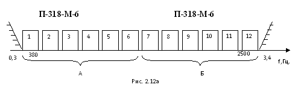Упаковки П-318-6 на одной оконечной станции соединяются между собой двумя шнурами, гнезда "Пер." П-318М-6, на правой боковой стенке, одной упаковки соединяются с аналогичными гнездами другой упаковки, также шнуром соединяются и гнезда "прием".
Упаковка, непосредственно подключаемая к каналу ТЧ, называется «ведущей». Упаковка, подключаемая к «ведущей», называется «ведомой». Переключатель на блоке линейного оборудования "6; 12/16; ведом" "ведущей" упаковки ставится в положение "12/16", при этом линейное оборудование этой упаковки участвует в формировании общего сигнала. Выходной сигнал 12-и телеграфных каналов снимается на линейном щитке "ведущей" упаковки, на клеммах "ТЛФ КАН", "ПЕР", "ПР". Переключатель на блоке линейного оборудования “ведомой” упаковки "6, 12/16; ведом" ставится в положение "ведом". В качестве ведущей может быть выбрана любая из упаковок.
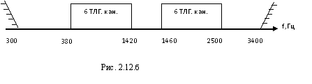Структурная схема включения "ведущей" и "ведомой" упаковок, аппаратуры П-318М в канал связи образованный аппаратурой П-303 показана на рис. 2.9.
Режим или . Смешанный режим или выбирается, в основном, при работе аппаратуры по 4-проводной кабельной линии с целью уменьшения возможного влияния переходных токов с передачи на свой прием.
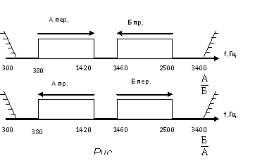При этом, если упаковка, например, на ближнем конце линии ставится в режим , то упаковка на дальнем конце линии ставится в режим (рис.2.13). В смешанном режиме можно обеспечить по телефонному каналу работу только шестью каналами.
Такие же режимы работы обеспечиваются в аппаратуре П-318М-4.
Общее устройство П-318М-6.
Аппаратура П-318М-6 выполнена в одной упаковке со съемной передней крышкой. Запасные и съемные части, необходимые для развертывания и настройки аппаратуры, располагаются внутри крышки и в ящике ЗИП.
На правой боковой стенке упаковки расположены 4-х контактные колодки для соединения ее со второй 6-ти канальной упаковкой или 4-х канальной упаковкой и 30 контактные колодки для соединения П-318М-6 с ПУ. Конструктивно все узлы П-318М-6 смонтированы в 25 отдельных блоках (рис. 2.14):
- шесть блоков передатчиков (Пер);
- шесть блоков приемников (Пр);
- шесть блоков коммутации каналов (БКК);
- блок питания (Пит);
- блок группового оборудования передачи (Гр. пер-1);
- блок группового оборудования приема (Гр. пр-1);
- блок генератора несущей частоты (Ген. нес.2880);
- блок линейного оборудования (Лин. об);
- блок переключения режимов (Реж);
- измерительный блок (Изм).
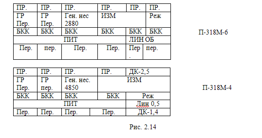3. Назначение, состав, технические характеристики и режимы работы и структурная схема аппаратуры П-327-12.
Комплекс военной аппаратуры П-327 предназначен для образования каналов тонального телеграфирования (ТТ) и низкоскоростных каналов передачи данных (ПД) в сетях и на прямых линиях связи различных звеньев управления.
Аппаратура П-327-12 обеспечивает получение двенадцати 100-бодных каналов ТТ в одном канале тональной частоты (ТЧ) или по шесть каналов ТТ в двух каналах ТЧ.
Аппаратура П-327-12 может работать с военной аппаратурой П-318М-6, П-319-6, а также с аппаратурой общегосударственной сети ТТ-144, ТТ-48, ТТ-12, ТТ-17П.
Назначение.
Аппаратура П-327-12 обеспечивает получение двенадцати 100-бодных каналов ТТ в одном канале тональной частоты (ТЧ) или по шесть каналов ТТ в двух каналах ТЧ.
В шестиканальном режиме обеспечивается возможность подключения к каждому полукомплекту аппаратуры П-327-12 телефонного (ТФ) переговорного устройства аппаратуры П-327-ТПУ.
Нормальная работа аппаратуры П-327-12 обеспечивается при температуре окружающего воздуха от -10 до +50 °С.
Использование каналов.
Каналы ТТ аппаратуры рассчитаны на подключение ТГ устройств, работающих токами двух направлений с разделенными цепями передачи и приема.
Для подключения ТГ аппаратов, работающих однополосными посылками как с разделенными, так и с неразделенными цепями передачи и приема, используются переходные устройства, размещенные в аппаратуре П-327-ПУ6 и П-327-ПУ1.
Состав основного оборудования.
1. ЗИП
2. Аппаратура П-327-12
3. Эксплуатационная документация
4. Линейный щиток.
Система управления и контроля.
В аппаратуре предусмотрена оптическая аварийная сигнализация:
· пропадании сигналов на выходе тракта передачи,
· пропадании напряжений питания,
· неисправностях в генераторном оборудовании
· о понижении уровня приема более чем на 25 дБ по сравнению с номинальным
· пропадании уровня передачи.
В аппаратуре обеспечивается возможность регулировки преобладаний в каналах ТГ на ±20%.
Для проверки и настройки каналов ТГ в аппаратуре имеются:
· датчик телеграфных сигналов вида 1 : 1 (датчик точек) с номинальной скоростью 200 Бод
· индикатор преобладаний, обеспечивающий точность устранения преобладаний не хуже 3%.
Режимы работы и электрические параметры системы.
Аппаратура П-327 является многоканальной аппаратурой тонального телеграфирования с частотным разделением каналов и с частотной модуляцией.
Как уже указывалось, аппаратура П-327-12 может работать по одному и двум каналам ТЧ.
Первый режим условно назван режимом 1ТЧ, а второй - 2ТЧ.
В режиме 1ТЧ аппаратура образует в канале ТЧ двенадцать каналов ТТ со скоростью 100 Бод в полосе 0,3 -3,4 Кгц
В режиме 2ТЧ аппаратура схемно разделяется на две независимые части, каждая из которых работает по отдельному каналу ТЧ, образуя в нем шесть каналов ТТ со скорость 100 Бод в полосе 1,8-3,4 Кгц, т. е. в полосе каналов 7-12. В полосе 0,3-1,6 Кгц при этом может быть получена служебная телефонная связь с помощью аппаратуры П-327-ТПУ.
Аппаратура П-327-12 включается в канал ТЧ только по 4-х проводной схеме в точки канала с относительными уровнями - 1,5 нп (-13дБ) и + 0,5 нп (4,ЗдБ).
Затухание СЛ-1 должно быть не более 1,15 нп(10дБ). Это соответствует длине СЛ для кабеля:
· П-274М - 5 км,
· П-268 - 10 км,
· ПТРК - 4 км.
Соединительные линии к телеграфным устройствам могут быть как 2-х проводными, так и одно проводными ( провод-земля). Длина соединительных линий (СЛ-2) может быть в пределах для кабеля:
· П-274М - 5 км,
· П-268 -1 0 км
Основные электрические характеристики каналов.
Каналы аппаратуры П-327-12 скорость телеграфирования до 100 Бод. Возможно повышение скорости до 150Бод за счет увеличения краевых искажений ТГ сигналов.
Уровни передачи каждого канала аппаратуры П-327-12 на ее линейных зажимах равны -32,5 дБ (-3,75нп).
Номинальные уровни приема аппаратуры П-327-12 равны -15,5дБ (-1,73 нп).
Средняя мощность сигналов всех каналов ТТ аппаратуры П-327-12, приведенная к точкам с нулевым относительным уровнем, равна 135 мкВт.
Входное и выходное сопротивления аппаратуры П-327 с стороны подключения к каналу ТЧ равны 6000м. Допустимое отклонение сопротивления не более 210 Ом.
Входное сопротивление ТГ цепей передачи постоянному току составляет 1000±1000м при напряжении на входе 20±5В, а цепей приема не превышает 5100м.
Напряжение питания ТГ цепи передачи ±20 В. Работоспособность канала сохраняется при величине напряжения от 5 до 30 В. Номинальная величина тока 20 мА.
Напряжение питания ТГ цепей приема ±20 В. Допустимое отклонение напряжения от ±9 до ±25 В.
Разность напряжений положительной и отрицательной полярности не превышает 7% от средней величины этого напряжения.
Коэффициент пульсации в ТГ цепях приема не превышает 3%.
Телеграфные цепи допускают включение дополнительного внешнего источника питания с напряжением 60 В.
Полоса частот каждого канала ТТ равна f1-f2 = 160 Гц.
Полоса расфильтровки - 80 Гц;
Средние частоты каналов выбраны по формуле:
fср = 240+240n Гц, где n - номер канала.
Девиация частоты f = ± 60 Гц.
Характеристические частоты в каналах равны:
· fнn = fcр - f
· fвn = fср + f
Здесь fнn и fвn нижняя и верхняя характеристические частоты п -го канала.
В комплексе П-327 сигналам положительной полярности соответствует нижняя, а сигналам отрицательной полярности - верхняя характеристическая частота. В случае отсутствия тока в телеграфной цепи передачи передается верхняя характеристическая частота.
Допустимое отклонение характеристических частот от номинальных значений на линейных выходах всех типов аппаратуры П-327 составляет не более ± 1 Гц.
Режимы работы каналов ТТ.
Аппаратура образует телеграфные каналы в режиме 1. Для перевода в режимы 2 и 3 необходимо использовать П-327-ПУ-6 и П-327-ПУ-1.
Режим I - Режим работы токами двух направлений с разделенными цепями передачи и приёма. Предназначен для подключения к каналу оконечных телеграфных устройств работающих токами двух направлений (СА). Токи передачи и приёма 20 +- 5 мА.
Режим II - режим работы токами одного направления с разделёнными цепями передачи и приёма. Предназначен для подключения к телеграфному каналу двух телеграфных устройств к тракту приёма и тракту передачи через переходные устройства П-327- ПУ1, П-327-ПУ6.
Режим III - режим работы токами одного направлениями нераздельными цепями передачи и приёма. Предназначен для подключения к ТТ каналу одного приемно-передающего аппарата через переходное устройство П-327 - ПУ6(1).
Электропитание, масса.
Электропитание П-327-12 осуществляется от сети переменного тока, частотой 50 Гц напряжением 220B+10=15% (187-242) в на ПУС и стационарных объектах или частотой 400 Гц напряжением 115В+6В (109-121) в на самолетах, вертолетах (ВЗПУ), потребляемая мощность от сети переменного тока - 100 ВА.
Масса аппаратуры: 55 кг.
Вес комплекта: 78,5 кг.
Габариты: 673 х386х271.
2.Принцип работы аппаратуры П-327-12 по структурной схеме.
Устройство аппаратуры П-327-12.
В основу построения П-327-12 положен принцип базового каналообразования заключающийся в том, что для получения многоканальных систем связи используется один базовый блок канала. Количество базовых блоков канала определяет число каналов в аппаратуре. Все канальные блоки одинаковы, взаимозаменяемые.
Постановка в соответствующую полосу частот общего линейного спектра в зависимости от режима работы происходит на индивидуальных частотах преобразования. Все узлы П-327-12 смонтированы в отдельных блоках с гравировкой на лицевой панели.
· БЛН - блок линейных напряжений.
· С-3 - блок сигнализации третий
· С-1 - блок сигнализации первый
· И - блок измерений
· ЧЗБ - блок частоты (для работы с П-318М)
· ЧЗА - блок частот (для работы с однотипной аппаратурой)
· ЧД - 2 блока делителей частот
· К - блок коммутации частот
· СН - блок стабилизаторов напряжений.
· ПИТ - блок питания.
· КП - 2 блока компенсации преобладании.
· ТГ - 12 блоков телеграфных устройств.
· K-100 - 12 блоков каналов.
· Л0 - 2 блока линейного оборудования.
·
Структурная схема аппаратуры П-327-12.
Тракт передачи.
Тракт передачи аппаратуры П-327-12 предназначен для преобразования двухполюсных телеграфных посылок постоянного тока в тональные посылки спектра канала ТЧ и передачи их в канал ТЧ с номинальным уровнем - 3,75 Нп.
В тракте передачи используется оборудование блоков ТГ, К-100, ЛО.
Двухполюсные посылки от передающего ТГ устройства или от переходного устройства П-327-ПУ по телеграфной цепи передачи через контакты тумблера РБТ-ИЗМ поступают на У. ВХ (входное устройство) индивидуального оборудования передачи (ИО).
Индивидуальное оборудование передачи включает в себя:
· ВХ - входное устройство
· ЧМ - частотный модулятор
· ДЧ - делитель частоты f/128
· УС ПЕР- усилитель передачи
· Ф.ПЕР - фильтр передачи
· П ПЕР - преобразователь передачи.
Светодиоды ПЕР + ПЕР - сигнализируют о полярности поступающих посылок.
Входное устройство улучшает форму ТГ посылок, приближая её к прямоугольной, и управляет работой ЧМ. Кроме того, оно осуществляет гальваническую развязку между ТГ цепью и частотным модулятором, что необходимо для защиты последнего от больших напряжений, могущих возникнуть в ТГ цепи.
Частотный модулятор обеспечивает получение ЧМ колебаний. На первый вход частотного модулятора подаются ТГ посылки, на второй и третий входы - колебания кратных базовых характеристических частот. При работе с однотипной аппаратурой нижняя частота равна 503,04 к Гц, верхняя - 518,4 кГц. В случае работы с аппаратурой П-318М нижняя частота равна 504,34 к Гц, верхняя - 517,12 кГц.
Работа ЧМ заключается в том, что при поступлении на его вход положительной ТГ посылки он создает цепь для прохождения тока верхней, а при поступлении тока отрицательной посылки - нижней кратной базовой характеристической частоты. При отсутствии тока в ТГ цепи передачи на вход ЧМ подаются колебания нижней частоты.
Таким образом, на выходе частотного модулятора формируется ЧМ колебания. Но в этих колебаниях в моменты перехода от одной частоты к другой происходит скачок фазы, величина которого является случайной и лежит в пределах от 0 до радиан. Скачок фазы приводит к краевым искажениям ТГ сигналов. Для уменьшения этого скачка ЧМ колебания первоначально формируют в области достаточно высоких частот, а затем эти частоты понижают до характеристических с помощью ДЧ с коэффициентом деления 128. На выходе делителя максимальная величина скачка будет /128 ( 1,4 ), т. е. колебания превращаются практически в безобрывные.
На выходе делителя частоты получаются базовые характеристиче-кие частоты: fн = 3930 Гц, fв = 4050 Гц - при работе с однотипной аппаратурой и fн = 3940 Гц, fв = 4040 Гц - при работе с аппаратурой П-318М. С выхода делителя сигналы в виде последовательности импульсов прямоугольной формы поступают на УС ПЕР.
Усилитель передачи обеспечивает номинальную нагрузку полосового фильтра со стороны вход и номинальный уровень сигналов на выходе аппаратуры.
Фильтр передачи служит для ограничения спектра сформированных делителем МЧ колебаний, предотвращая этим, влияние неиспользуемых составляющих спектра данного канала на соседние каналы.
С выхода фильтра сигналы поступают на преобразователь передачи, который обеспечивает перенос базовых сигналов в отведенную для данного канала ТТ полосу частот. Частоты несущих колебаний (частоты преобразования) для каналов выбраны такими, при которых нижняя боковая полоса частот на выходе преобразователя соответствует полосе частот данного канала ТТ. Верхние боковые полосы частот во всех каналах ТТ и большинство других побочных продуктов преобразования лежат выше эффективно передаваемой полосы канала ТЧ и отфильтровываются одним фильтром, установленным в линейном оборудовании аппаратуры. Этим и обусловлен выбор номинальных значений несущих частот и базовых характеристических частот.
После преобразования частот положительной ТГ посылке соответствует нижняя, а отрицательной посылке и отсутствию тока в ТГ цепи передачи - верхняя характеристическая частота канала.
Выходы преобразователей передачи объединены в две группы по шесть каналов в каждой. С выходов преобразователей сигналы подаются к линейному оборудованию передачи.
Линейное оборудование передачи включает в себя:
· СМ- сумматор.
· ЛФ ПЕР линейный фильтр передачи
· ЛУС ПЕР - линейный усилитель передачи
· У. ПЕР. - удлинитель передачи
· ЛТ. ПЕР - линейный трансформатор передачи.
Сумматор имеет низкоомное входное сопротивление, чем обеспечивается малое взаимное влияние каналов друг на друга. Кроме того, сумматор обеспечивает необходимое усиление сигналов и активную нагрузку для преобразователя и линейного фильтра. После суммирования групповой ЧМ сигнал поступает на ЛФ ПЕР.
Линейный фильтр передачи подавляет сигналы в верхней боковой полосе частот и другие побочные продукты преобразования, имеющиеся на выходе индивидуальных преобразователей шести каналов и усиленные сумматором вместе с полезными сигналами. На выходе фильтра оказывается окончательно сформированным линейный спектр шестиканальной группы в полосе 0,3 - 1,8 кГц или 1,8 - 3,4 кГц, в зависимости от номинального значения несущих частот, подаваемых на индивидуальные преобразователи передачи каналов ТТ.
Линейный усилитель передачи обеспечивает необходимый уровень сигналов на выходе линейного оборудования. На входе усилителя производится объединение двух шестиканальных групп каналов ТТ при двенадцатиканальном режиме работы или объединение сигналов шестиканальной группы с сигналами аппаратуры П-327-ТПУ. При этом используется линейное оборудование певой шестиканальной группы каналов (каналов 1 - 6). Соответствующая коммутация осуществляется на ответной контактной колодке при вставлении блока ЛО в гнездо.
Удлинитель передачи позволяет регулировать перепайками уровень сигналов на выходе тракта передачи, обеспечивая номинальную загрузку канала ТЧ. Затухание удлинителя может изменяться от 0 до 16 дБ.
Линейный трансформатор передачи предназначен для обеспечения симметричного выхода аппаратуры.
Тракт приема.
Тракт приема обеспечивает прием частотно-модулированных сигналов из канала ТЧ и преобразование их в 2-х полюсные посылки постоянного тока 20 мА, напряжением 20В.
Линейное оборудование тракта приема включает в себя:
· ЛТ ПР- линейный трансформатор приема,
· У ПР - удлинитель приема,
· ЛУС ПР - линейный усилитель приема.
Линейный трансформатор приема обеспечивает переход от симметричного входа аппаратуры к несимметричной схеме тракта приема аппаратуры П-327-12.
Удлинитель приема обеспечивает возможность установки номи-нальной внутренней диаграммы уровней тракта приема аппаратуры.
Линейный усилитель приема обеспечивает необходимую величину уровня сигналов, подаваемых к индивидуальным преобразователям приема.
Индивидуальное оборудование тракта приема включает в себя:
· П ПР - преобразователь частоты приема,
· Ф ПР-1 - фильтр приема один
· УЧ ОГР- усилитель-ограничитель,
· ЧД - частотный детектор,
· ФПР-2 - фильтр приема два
· пороговое устройство с регулятором преобладания "ПРЕОБЛ"
· Вых - выходное устройство
Преобразователь частоты служит для преобразования спектра принимаемых ЧМ колебаний канала ТТ в базовый спектр, одинаковый для всех каналов. Несущие колебания, подаваемые на преобразователи приема, для каждого канала имеют такую же частоту, как и колебания, подаваемые на преобразователи передачи того же канала. С выхода преобразователя преобразованный ЧМ сигнал поступает на Ф ПР1.
Первый фильтр приема представляет собой полосовой фильтр и служит для выделения из общего преобразованного спектра всех каналов спектра данного канала, который после преобразования занимает нижнюю боковою полосу и является базовым спектром.
Усилитель-ограничитель обеспечивает необходимую мощность сигналов на входе ЧД. Благодаря глубокому ограничению амплитуд достигается постоянство этой мощности и устраняется паразитная амплитудная модуляция, вызванная действием помех.
Частотный детектор вместе с Ф.ПР2 предназначен для преобразования ЧМ сигналов в импульсы постоянного тока, соответствующие телеграфным посылкам. Для работы ЧД используются колебания с частотой 2748,7 кГц.
Пороговое устройство улучшает форму ТГ посылок, приближая ее к прямоугольной. Имеющийся в пороговом устройстве регулятор преоблада-ний позволяет устранять преобладания в телеграфных посылках, вносимых каналом ТТ.
Выходное устройство в соответствии с принимаемыми ТГ посылками коммутирует линейные телеграфные напряжения 31 В на телеграфную цепь приема. При этом обеспечивается гальваническая развязка между ТГ цепью приема и предшествующими ей узлами тракта приема аппаратуры.
Принцип работы устройства компенсации преобладаний.
Устройство компенсации преобладаний предназначено для автоматического устранения преобладании ТТ посылок, возникающих вследствие изменения частоты сигналов в канале ТЧ.
Блок компенсации преобладаний состоит из формирователя контрольной частоты и приемника контрольного канала.
Формирователь КЧ состоит из:
· делителя частоты ДЧ.ПР;
· фильтра передачи Ф.ПЕР.КП.
Приемник контрольного сигнала состоит из:
· первого фильтра приема Ф.ПР1.КП (ПФ);
· усилителя ограничителя УС-ОГР.КП (УО);
· схемы блокировки БЛ.КП (УБ);
· частотного детектора ЧД.КП;
· второго фильтра приема Ф.ПР2.КП (ФНЧ).
Указанный на схеме ЧД состоит из
· формирователя импульсов сброса;
· делителей частоты;
· схемы совпадения.
Рассмотрим принцип работы формирователя КЧ. Делитель частоты имеет коэффициент деления 128. На вход ДЧ подается колебание с f=422,4 кГц. На выходе ДЧ формируется колебание с f=3,3 кГц. С выхода ДЧ колебание в виде последовательности импульсов прямоугольной формы подается на Ф.ПЕР.КП, который выделяет из этой последовательности синусоидальный сигнал с f=3300 Гц. Далее этот сигнал объединяется с сигналами каналов ТТ.
Рассмотрим принцип работы приемника контрольного канала. Колебания контрольной частоты 3300 Гц с выхода блока ЛО поступают на первый фильтр приема, который представляет собой полосовой фильтр. Полоса пропускания фильтра 3280 - 3320 Гц. С выхода фильтра контрольной частоты поступает на усилитель - ограничитель.
Усилитель - ограничитель усиливает сигнал до определенного ограничения. Таким образом, он обеспечивает качественное ограничение сигналов во всем допустимом диапазоне входных уровней приема. С выхода усилителя - ограничителя сигналы поступают на вход схемы блокировки и на вход схемы формирования импульсов сброса частотного детектора.
При нормальном уровне колебаний контрольной частоты на входе приемника эти колебания проходят через схему блокировки на частотный детектор. Снижение уровня более чем на 17,4 дБ или отсутствие колебаний контрольной частоты к срабатыванию схемы блокировки и на частотный детектор поступают колебания с частотой 3300 Гц с выхода делителя частоты своего формирователя.
Цифровой частотный детектор служит для детектирования ЧМ колебаний. В аппаратуре П-327 применен цифровой частотный детектор, который преобразует ЧМ сигналы в широтно-модулированные. Детектор состоит из устройства формирования импульсов сброса, двух делителей частоты и двух схем совпадения.
Формирователь импульсов сброса предназначен для формирования двух импульсных последовательностей, у которых появление импульсов совпадает по времени с положительными фронтами принимаемых колебаний, период равен удвоенному периоду принимаемых колебаний и импульсы одной последовательности сдвинуты относительно импульсов в другой на период принимаемых сигналов. С выходов формирователя импульсов сброса последовательности поступают на входы установки начального состояния триггеров делителей частоты.
На счетные входы делителей частоты от синтезатора частот поступают равномерные импульсные последовательности прямоугольной формы с частотой следования 983,04 кГц. Применение делителей частоты и выбор сравнительно высокой частоты для детектора связаны с задачей формирования на приеме таких телеграфных посылок, у которых краевые искажения не превышают допустимой величины. Чем больше коэффициент деления, тем ближе совпадает начало каждого первого импульса на выходе делителя с началом каждого периода в принимаемом сигнале, что в конечном итоге приводит к уменьшению краевых искажений принимаемых сигналов. При высокой частоте следования импульсов (983,04 кГц) период принимаемых сигналов значительно больше периода частоты следования после ее деления. Это также приводит к снижению краевых искажений.
Момент сброса каждого делителя в начальное состояние определяется моментом поступления импульсов сброса, сформированных в ФИ. Поскольку в момент сброса одного делителя другой продолжает счет, так как в состоянии нулевой фазы он находится ранее первого на период входного сигнала, то и разность фаз на выходах обоих делителей будет определяться длительностью этого периода.
Выходы делителей подключены на входы схем совпадения. Выходы схем совпадения объединены. На объединенном выходе схем совпадения формируются сигналы с длительностью, определяемой разностью фаз сигналов делителей, т. е. Временем перекрывания импульсов на входах одной и другой схем совпадения. Таким образом, изменение частоты на входе частотного детектора, приводящее к сдвигу сигналов по фазе на выходах делителей, определяет длительность сигналов на выходе частотного детектора.
С выхода схемы совпадения широтно-модулированные сигналы поступают на второй фильтр приема, который выделяет постоянную составляющую этой импульсной последовательности. На выходе фильтра формируется постоянное напряжение, пропорциональное отклонению принимаемых колебаний контрольной частоты от своего номинального значения. При наладке аппаратуры потенциометром устанавливается нулевой потенциал на выходе фильтра при номинальном значении контрольной частоты.
Компенсатор преобладаний КП1 обеспечивает устранение преобладаний в 1-6 каналах, а КП2 в 7-12 каналах ТТ.
Напряжение от компенсатора преобладаний поступает на пороговые устройства каналов. Пороговое устройство каждого канала входит в тракт приема этого канала. В тракте приема происходит преобразование ЧМ сигналов в ТГ посылки. ТГ посылки поступают на пороговое устройство, при этом имеют пологие фронты. Пороговое устройство улучшают форму этих ТГ посылок, приближая ее к прямоугольной. Регулировка преобладаний в канале осуществляется изменением порога срабатывания порогового устройства потенциометром ПРЕОБЛ, выведенным на лицевую панель блока. Автоматическая компенсация преобладаний осуществляется изменением порога срабатывания порогового устройства напряжением, подаваемым от компенсатора преобладаний.